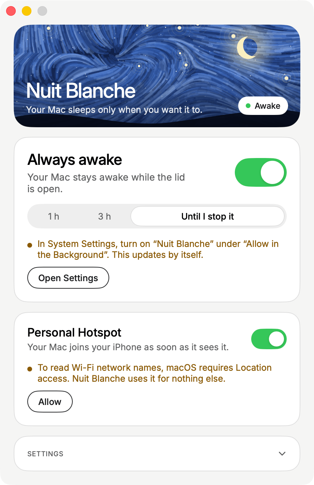

Your Mac stays awake, open or closed.
A MacBook normally falls asleep the moment you close it. With Nuit Blanche on, it keeps working, whether you leave it on the desk or take it with you, lid closed.
FR EN
Free · notarized by Apple
One switch, and your Mac stays awake, even with the lid closed. Your AI agents, downloads, renders and syncs keep going while you walk away.
macOS 14 or later Apple Silicon and Intel

Nuit Blanche
Your Mac sleeps only when you want it to.
Awake
Always awake
Your Mac stays awake, even with the lid closed.
Personal Hotspot
Your Mac joins your iPhone as soon as it sees it.
What Nuit Blanche does
A MacBook normally falls asleep the moment you close it. With Nuit Blanche on, it keeps working, whether you leave it on the desk or take it with you, lid closed.
Turn on Personal Hotspot on your iPhone and pick it once in Nuit Blanche. Whenever it shows up, your Mac joins it on its own. By default, only when there’s no other way online, to spare your data plan. On the train, at the café, at the bottom of the garden: it never drops off.
On battery, below 10%, Nuit Blanche stops, lets you know and lets your Mac rest. Plugged in, it never stops. You can also pick a duration: 1 hour, 3 hours, or until you stop it.
A little moon with an eye at the top of your screen: open when your Mac is staying up, closed when it sleeps as usual. One click on, one click off, or the ⌘⇧N shortcut.
While you sleep
Everything that used to stall when your Mac dozed off now runs to the end.
First launch
The first time, macOS wants your OK so Nuit Blanche can keep your Mac awake with the lid closed. The app walks you through it, and it only happens once.

Questions
Yes. Nuit Blanche does one thing: it tells your Mac not to sleep while “Always awake” is on. As soon as you switch it off, or quit the app, your Mac gets its normal sleep back.
The app is notarized by Apple: Apple checked it before you can open it.
With the lid closed your Mac works as usual, so it needs to breathe. Set it on a hard surface rather than a bed or sofa, and don’t put it in a bag or sleeve while it’s running.
If it has to go in your bag, switch Nuit Blanche off first, in one click.
An awake Mac uses more power than a sleeping one, that’s normal. That’s why Nuit Blanche watches the battery: on battery, below 10%, it stops on its own, sends you a notification and lets your Mac sleep. You can set that level anywhere from 5 to 50%. Plugged in, it never stops.
Yes: when your Mac goes online through your iPhone, it uses your mobile plan’s data, like any hotspot. That’s why, by default, Nuit Blanche only joins it when your Mac has no other way online. You can also tell it to always prefer it, or turn the option off.
To stay awake with the lid closed, Nuit Blanche relies on a small helper in the background. Just once, macOS asks you to allow it in System Settings, under General, in “Allow in the Background”. The app takes you there in one click, and macOS may ask for your Mac password at that moment. After that, never again.
If you use Personal Hotspot, macOS will also ask for Location access: that’s its rule for seeing Wi‑Fi network names. And Nuit Blanche asks to show notifications, to let you know when it stops on its own. None of this ever leaves your Mac.
macOS 14 (Sonoma) or later.
Download the file, open it, and drag Nuit Blanche into your Applications folder.
To uninstall: in the little moon’s menu, choose “Quit”. Your Mac gets its normal sleep back within seconds. Then move the app to the Trash.
Yes. No subscription, no account, no ads. Nothing is sent anywhere.